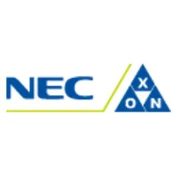
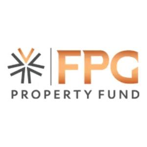
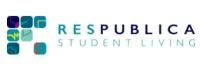
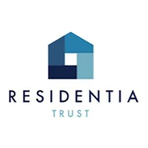
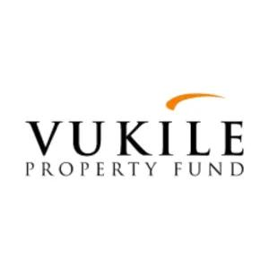
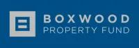

One accountable maintenance partner
Integrated coordination of trades and service requirements through an end-to-end property maintenance approach.
Established 2012 · Cape Town, South Africa
Barco Group brings together practical building maintenance, compliance support and portfolio care through Barco Assist — protecting commercial, retail and residential assets with operational discipline and reporting visibility.
Who we are
BARCO ASSIST is the dedicated facility maintenance division of BARCO GROUP, focused on keeping property assets functional, compliant and well maintained across South African portfolios.
The group’s foundation is technical excellence, operational efficiency and a unified vision to deliver lasting value to every asset it supports from its Paarden Eiland, Cape Town base.
Integrated coordination of trades and service requirements through an end-to-end property maintenance approach.
Service structures aligned to facility managers, retail portfolios, private landlords and body corporates.
Clear operational visibility so property stakeholders can protect assets, budgets and tenant experience.
Core focus areas
From day-to-day repairs to compliance-led work, Barco Assist manages and deploys the required trades as part of a complete property maintenance offering for Cape Town facilities management, Paarden Eiland property maintenance enquiries, and broader South African property maintenance portfolios.
Reliable support for offices, business parks and commercial premises where uptime and presentation matter.
Responsive maintenance for retail environments where customer experience and quick turnaround are critical.
Practical maintenance workflows for high-occupancy residential assets and managed accommodation portfolios.
Coordinated repairs, inspections and ongoing care to keep properties functional and well maintained.
Certificate of Compliance support for property stakeholders who need a clear compliance path.
One operational layer connecting trades, reporting, compliance and asset care.
Key client sectors
Barco Group speaks to serious property stakeholders: teams that need maintenance done cleanly, communication handled professionally and assets protected over the long term.
How we measure
Good property maintenance is not only the repair. It is the clarity before, during and after the work: the request, the trade, the compliance point, the update and the record.
Understand the asset, urgency and operational impact.
Deploy the right trade or maintenance response.
Keep stakeholders informed with clear job visibility.
Use maintenance insight to extend asset life and reduce repeat risk.
Our clients
Public client marks shown from Barco Assist’s current website assets.






FAQ
Quick answers for facility managers, landlords, body corporates and retail portfolio teams considering Barco Assist.
Barco Assist lists commercial maintenance, retail maintenance, student accommodation maintenance, holistic building maintenance and full Certificate of Compliance services as core focus areas.
Yes. Retail maintenance and student accommodation are listed as dedicated focus areas, alongside commercial and residential portfolio support.
Barco Assist lists full Certificate of Compliance services. Exact COC scope, timelines and requirements should be confirmed with the team for each property.
Response times and SLA details should be confirmed directly with Barco. The site is structured to route maintenance quote and portfolio support enquiries clearly.
Contact
Speak to Barco Group about facilities management, property maintenance, COC support and portfolio asset care.